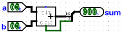

Substituir bibliotecas
Agora suponha que tenhamos dois circuitos do Logisim que deveriam fazer a mesma coisa. Como instrutor, você poderia ter pedido aos seus alunos concluírem uma tarefa. Você tem um arquivo que contém sua solução, mas também vários arquivos de alunos contendo seus trabalhos. Talvez a tarefa tenha sido construir um somador de dois bits.
Imaginarei dois arquivos, chamados master.circ e query.circ. Cada arquivo conterá um circuito chamado "Adder2" (é importante que o circuito para teste seja chamado exatamente igual), cuja aparência poderá ser a seguinte.
Adder2 em master.circ Adder2 em query.circ  
Como você poderá ver, o circuito principal usará o somador predefinido no Logisim, enquanto o circuito para teste usará dois subcircuitos representando uma meia-soma e uma soma-completa (os quais serão constituídos apenas por portas simples). Para os fins do nosso exemplo, o circuito para teste terá um erro estúpido: O carry da meia-soma não estará conectado à soma completa.
Nós construíremos o nosso circuito de teste em um arquivo diferente test.circ. Lá, carregaremos master.circ como uma biblioteca do Logisim (| Projeto |→| Carregar Biblioteca |→ | Biblioteca do Logisim |), e inserir seu somador de 2 bits como um subcircuito. Nós poderíamos executar esse circuito diretamente para obter a saída desejada para uma solução perfeita.
java -jar logisim-evolution.jar test.circ -tty table
Mas queremos executar o circuito usando query.circ ao invés de master.circ como o da biblioteca carregada. A abordagem ingênua seria abrir Logisim e carregar essa biblioteca de uma vez; ou você poderá simplesmente remover o master.circ e renomear query.circ para ser chamado de master.circ em vez disso. Mas Logisim inclui uma prática opção sub que substituirá temporariamente um arquivo por outro durante a sessão - sem fazer quaisquer alterações em disco.
java -jar logisim-evolution.jar test.circ -tty table -sub master.circ query.circ
A saída que você iria ver a partir disso é mostrada abaixo, naturalmente é diferente daquela vista na seção anterior,porque a biblioteca comum aos circuitos adder2 foi substituída no circuito de teste pela de query.circ errônea.
00 00 0E0 01 00 0E1 10 00 EE0 11 00 EE1 00 01 0E1 01 01 0E0 10 01 EE1 11 01 EE0 00 10 EE0 01 10 EE1 10 10 1E0 11 10 1E1 00 11 EE1 01 11 EE0 10 11 1E1 11 11 1E0
Próximo: Outras opções para verificações.